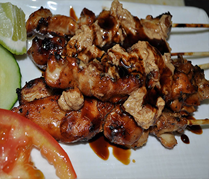

Bahan:
- 750 gr daging dada ayam difilet
Bumbu Perendam Daging:
- 8 bh bawang merah
- 5 bh bawang putih
- 3 bh miri
- 1 sdt tumbar
- 1 sdt garam
- 50 gr gula jawa
- 2 sdm kecap
Cara Membuat:
- Cuci daging ayam lalu potong kotak2.
- Bumbu perendam dihaluskan
- Daging direndam.
- Diamkan sekitar 30 mnt kemudian ditusuk-tusuk
- Nah sebelum dibakar guling-guling kan dicampuran kecap+margarin
- Bila sudah siap tinggal dibakar... Kalau saya senang bila dibakar diatas api arang.... Bakar diatas api yg sudah jadi bara kalau pas membakar ada lidah api, jauhkan daging dr lidah apinya tujuannya supaya daging tidak hitam manis alias gosong.
- Kalau sudah matang tinggal ditaruh diatas piring tambahkan bawang merah iris, lombok rawit iris, kol iris tipis dan kecap.